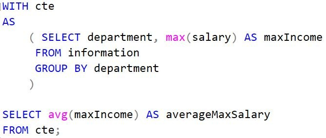

Data Modeling#
This set of notes introduces concepts of data modeling and the associated tools.
Data modeling is about how you model the data, or how you perceive the data structure as presented in the real world.
Examples of data engineering scenarios#
Online transaction processing (OLTP)
Any transactions, literally
e.g., retail, banking, texting
Online analytics processing (OLAP)
Interactive analytics queries
i.e., retrieve and aggregate data for information (or insight)
e.g., aircraft inventory analysis
Change data capture
Snapshots, differential updates
e.g., appointment scheduling
|
|---|
Example of average provider availability into the future. |

Logs
binary logs
JSON
Plain-text
Database and query#
Database refers to a data storage system and a query engine.
Query refers to the avenue to retrieve and act on data.
Query commands generally include:
Data Definition Language, e.g.,
CREATE,UPDATE,DROP
Data Manipulation Language, e.g.,
SELECT,INSERT,UPDATE,DELETE,COPY,MERGE
Data Control Language, e.g.,
GRANT,DENY,REVOKE
Transaction Control Language, e.g.,
COMMIT,ROLLBACK
Several notes about queries:
Complex queries incur higher computations.
What is the goal? Are we looking for a particular flight? or are we finding the number of flights that are delayed due to weather within date A and date B?
Avoid large number of scans when possible. Prepartitioning or pruning may be beneficial.
Use
EXPLAINon a query for analysis.
Use common table expressions, e.g.,
WITH
cte1 AS (SELECT a, b FROM table1),
cte2 AS (SELECT c, d FROM table2)
SELECT b, d FROM cte1 JOIN cte2
WHERE cte1.a = cte2.c;
Income scenario#
Say we have a table called information, with two columns department and salary.
We would like to query for the average maximum income across department.
 |
|---|
Example of a CTE usage |
Reference#
Chapters 5 and 8 of Fundamentals of Data Engineering (Reis, 2022) are excellent resources on this topic.